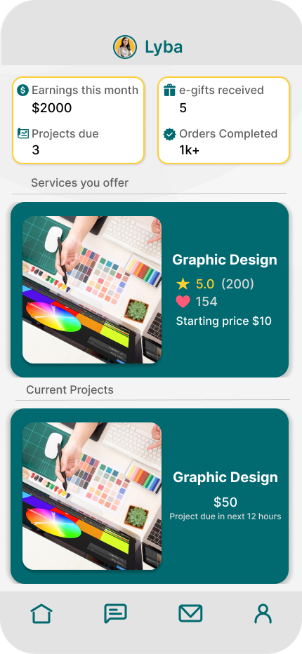
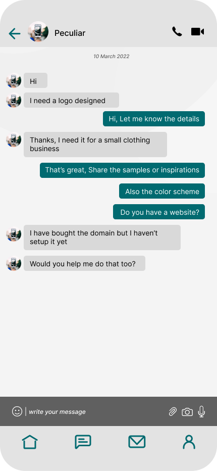
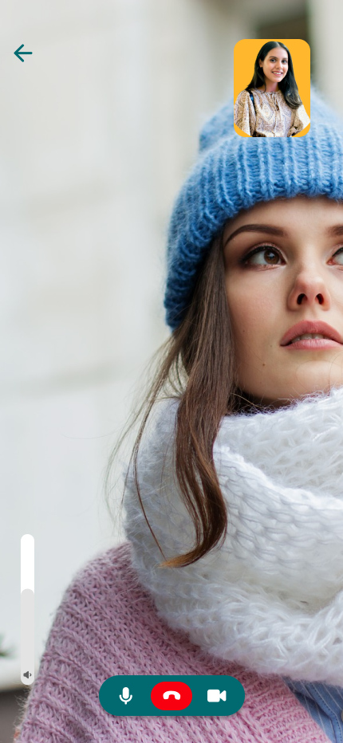
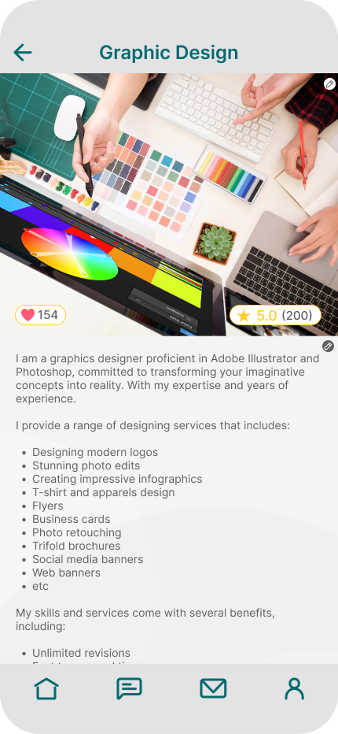
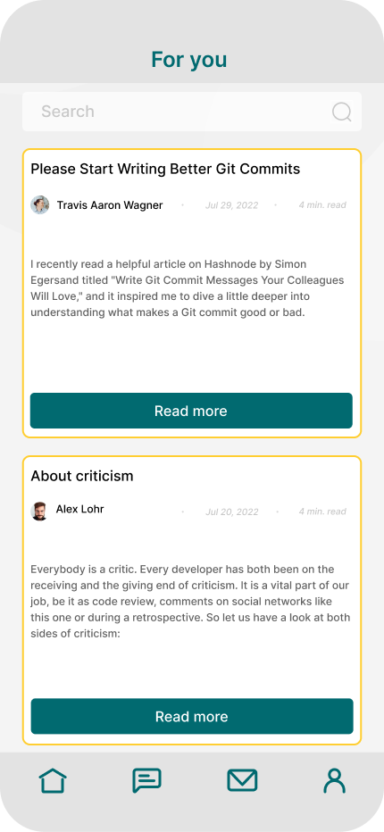
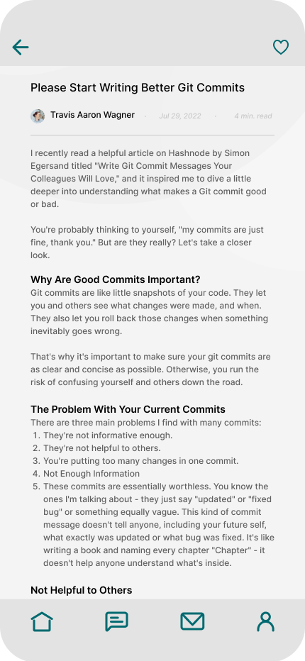
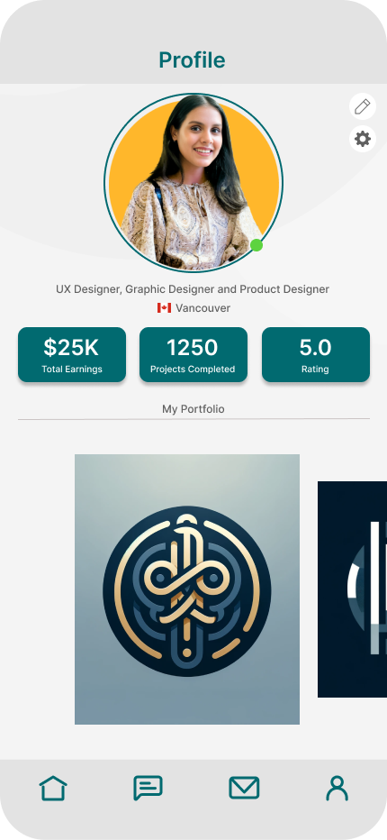
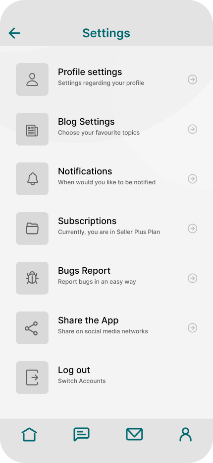

A mobile freelancing concept built around a simple question: what if finding work and actually collaborating did not feel like two separate experiences?



WorkWiz is a freelancing platform concept for digital services. I explored how service discovery, messaging, video calls, community content and profile-based trust could live in one mobile experience instead of feeling like disconnected features.
The design focused on the moments between discovery and delivery: understanding a service, deciding whether to trust someone, asking questions and maintaining communication once the relationship begins.
Messaging and calls needed to feel like part of the service flow rather than an extra tool users had to hunt for.
Profiles, ratings, services and portfolios give users more to judge than a name and a price.
Community content and appreciation features explored ways to make the platform feel less purely transactional.
The project reviewed Upwork, Freelancer, Fiverr, Toptal and Guru. The useful part was not compiling a feature list. It was deciding which familiar patterns WorkWiz should keep and where the concept could push further.
Existing platforms already teach users to evaluate freelancers through service information, credibility signals and profile details, so WorkWiz keeps those familiar decision points.
Video calls and messaging were brought forward so users could clarify work without the collaboration layer feeling separate from service discovery.
The blog concept gives users a place to share knowledge and build credibility outside individual service listings.
Kate and Mark were working personas used to think through the concept. The source does not document them as research-validated participants, so I’m presenting them as design tools rather than evidence from user interviews.
A freelance graphic designer who needs to present her work clearly, communicate with clients and build credibility through both services and community participation.
A small business owner who wants to understand a service, evaluate the person behind it and discuss project details before committing.
Rather than treating every feature as equally important, I organized the concept around how a client or freelancer moves from discovery into an ongoing working relationship.
Browse services, pricing, ratings and profile context.
Use profiles and portfolio information to build confidence.
Move into messaging or video when details need clarification.
Use community and personal settings to support the broader relationship.
The project evaluation identified three practical issues: the home screen needed clearer hierarchy, the profile presentation needed more polish, and typography needed stronger readability through contrast and weight.
Feedback pointed to readability problems on the home screen, so the direction moved toward stronger hierarchy between sections and information.
The profile screen needed to feel more considered because it carries much of the trust-building work in a freelancer marketplace.
Font treatment was refined to make the interface easier to read rather than relying on light styling for visual softness.
I’m showing the final screens larger here so the interface decisions are readable instead of becoming tiny decorative phone wallpaper. A surprisingly common portfolio crime.
The home and service detail screens bring together service information, pricing and credibility signals so users can understand an offering before reaching out.

Messaging and video calling sit close to the service experience so questions and project details can be handled without making communication feel like a separate product.
The blog section extends the experience beyond individual jobs and gives users a place to share knowledge, publish content and build a stronger professional presence.


Profile and settings screens give users control over how they present themselves and manage the experience while supporting the trust-building role of the marketplace profile.


The interface uses teal as the main brand color with light neutral surfaces and a small yellow accent. Rounded mobile components and consistent navigation help the different parts of the concept feel like one product.
WorkWiz pushed me to think beyond individual screens and ask why each feature belonged in the product. Discovery, communication, profiles and community only make sense together when they support the same goal: helping two people understand each other well enough to work together.
Continue into another UX case study or return to the broader digital portfolio.